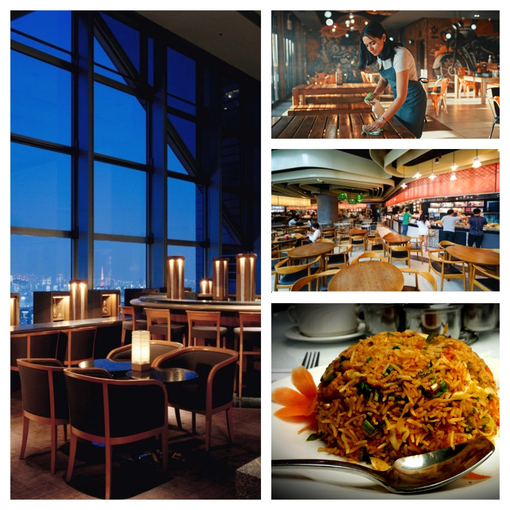

17
Years
Experience
We are doing more than you expect
Established in 1995, SRM Hotel Pvt. Ltd. is a premier hotel chain in South India, dedicated to providing value-driven experiences with unparalleled hospitality standards. Our elegantly designed rooms and suites, coupled with modern amenities, ensure a comfortable and memorable stay for both business and leisure travelers. With properties strategically located in Chennai, Tuticorin, and Tiruchirappalli, we blend contemporary design with warm hospitality to offer a sanctuary of comfort and serenity. Whether you're on a romantic retreat or a family getaway, SRM Hotels promises an experience worth cherishing